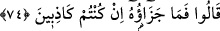
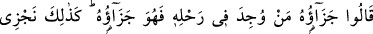
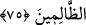

74. (Yûsuf’un adamları) dediler ki: “Peki, siz yalancıysanız bunun cezası nedir?”
Yûsuf’un adamları “dediler ki: “Peki, siz” su tasının sizde olmadığı ve hırsız
olmadığınız konusunda “yalancıysanız bunun” yani bu tası çalmanın size ve şerîatınıza
göre “cezası nedir?”
75. (Onlar:) “Onun cezası, kayıp eşya kimin yükünde bulunursa işte o (şahsa el
koymak) onun cezasıdır. Biz zâlimleri böyle cezalandırırız.” dediler.
Onlar: “Onun cezası, kayıp eşya” su tası “kimin yükünde bulunursa” tası kim
çalmış ise onun alıkonulmasıdır. “İşte o” şahsa el koymak “onun cezasıdır.” Bu son
ifade, mezkûr hükmü pekiştirmektedir. İşte onun karşılığı böyle alıkonulmaktır,
demektir.
Yâkub (a.s.)’ın şeriatında hırsızın cezası bizim şeriatımızdaki el kesmenin yerine bir
sene alıkonulmak idi.
“Biz” hırsızlık eden “zâlimleri böyle”sine âdli bir ceza ile “cezalandırırız.”
dediler.”
Bu ifade, hırsızlığın çirkinliğini beyan ve tekid etmenin ardından anılan hükmü
pekiştirmektedir. Ancak bu sözleri, kendilerine yapılandan habersiz bir vaziyette suçsuz
olduklarından emin olarak sarf ettiler.
[71]. Münâvî, I, 493
[72]. Münâvî, II, 465
[73]. Kurtubî, Camî, XII, 291
[74]. İbn Sa’d, Tabakât, Beyrut, 1401 I, 235